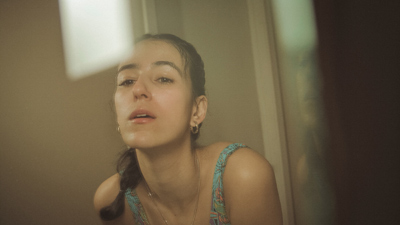

past performance |
|||
| 
TCS x Roya Carreras: The Big Balloon showtimes & tickets:April 14 @ 7:30pm installation / 8pm performance Concept, Direction, Choreography: Roya Carreras The CURRENT SESSIONS is pleased to present the world premiere of The Big Balloon by Iranian-Hispanic artist and choreographer Roya Carreras. In The Big Balloon, Roya Carreras reimagines a vanished childhood memory, surfacing a delicate world of fantasy and fragmented identity. Carreras’ choreography works within a series of deconstructed interiors, recalling domestic scenes from her childhood home in California. Set against field recordings of daily chores, intimate scenes captured on film register the vernacular of her daily routine. Persian rugs and astroturf line living spaces which—at once—act as stage and sanctuary, where Carreras’ distorted balletic gestures are worked into a detailed physical vocabulary. Forgotten vignettes resolve momentarily, before The Big Balloon is finally undone, opening a space to cross unseen cultural boundaries. A limited-run booklet including translations in Spanish and Farsi, will be published as part of The Big Balloon performances. In the Living Room, a post-performance discussion between Carreras, moderator, and audience link process to upbringings on Friday, April 14; on Saturday, April 15 a Wrap Party will follow. The Big Balloon is part of the CURRENT SESSIONS’ 2017 curatorial focus “Resistance,” which looks to further classify movement into a broader spectrum by challenging systems of making and observing dance, and is first of a TCS-presented, solo-artist performance series. Learn more about artist and collaborators at thecurrentsessions.com/artist-bios-tcs-x-roya-carreras. Image: Jason Knade of artist Roya Carreras *With valid ID; residents living within zip codes 10002, 10003, 10009. Proceeds from ticket sales will be donated to National Iranian American Council. |
upcoming performances |
|||
 |
|||
| EVQ Film Festival 2018 August 20-25 |
|||
performance archives |
|||
| 2018 | 2017 | 2016 | 2015 |
| 2014 | 2013 | 2012 | 2011 |
| 2010 | 2009 | 2008 | 2007 |